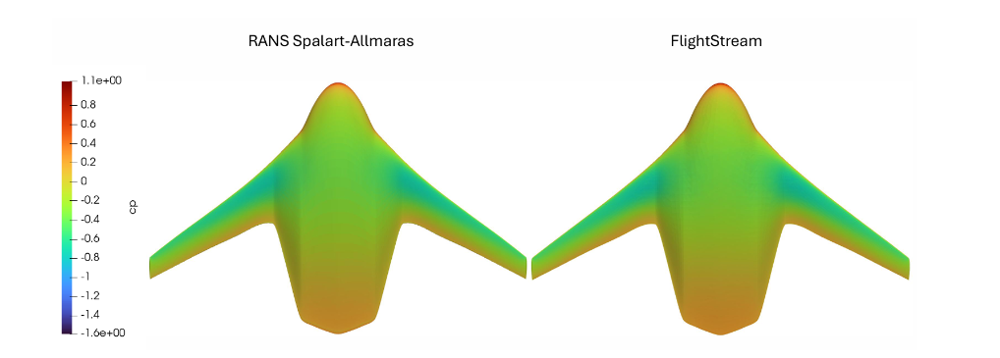

Sheet 02
CFD & Aerodynamics

Fig. 01 + Add PhotoKSU Advanced Aerodynamics & Propulsion LabJan 2026 – Present
1st Author ×2
Blended Wing Body vs. RANS CFD
Siemens FlightStream benchmarking
- Benchmarking FlightStream against RANS-based CFD for a blended wing body aircraft (BlendedNet++ dataset, Geometry 227; NACA 25118 / NASA SC(2)-0412 / NACA 0012 sections) in collaboration with Siemens
- Assessing FlightStream's potential to accelerate simulation turnaround for early-stage aircraft concepts
- Two papers accepted as first-author outputs to AIAA SciTech 2027
FlightStreamRANS CFDAIAA SciTech 2027
Fig. 02+ Add Photo
KSU Advanced Aerodynamics & Propulsion LabSep 2023 – Present
1st Author
Compound Delta Wing CFD
Vortex lift & transonic performance
- Executed 140+ CFD simulations in ANSYS Fluent characterizing delta wing performance across velocities and angles of attack, improving lift-to-drag efficiency from 7.24% to 13.57% in the transonic regime
- Investigated vortex lift modeling through trailing-edge boundary condition treatment; related laminar-regime work in Fluent and OpenFOAM at low Reynolds numbers
- First-authored a paper presented at the 2025 AIAA Region II Student Conference
ANSYS FluentOpenFOAMAIAA Region II
Fig. 03+ Add Photo
KSU × Oklahoma State S2FAR LabMar 2025 – Present
Co-Author
Control Surface Validation — "Bird" UAV
Multi-fidelity FlightStream validation
- Validated FlightStream aileron-deflection load predictions against high-fidelity CFD and WindShape wind-tunnel / load-cell testing on a Group-1 fixed-wing UAV (S2F-BD213)
- Supported closed-loop roll-axis control validation using a Pixhawk Cube Orange Plus flight controller and a custom MATLAB/Simulink ground control station
- Co-authored findings published at AIAA SciTech 2026 with Oklahoma State University's S2FAR Lab and Siemens
WindShape TunnelPixhawkAIAA SciTech 2026
Fig. 04+ Add Photo
KSU Advanced Aerodynamics & Propulsion LabIn Progress
Design Phase
Forward-Facing Cavity PIV Replication
URANS CFD vs. experimental PIV
- Running URANS CFD to replicate a forward-facing cylindrical cavity PIV experiment, working through timestep selection and Rossiter mode analysis
- Coordinating validation questions directly with the study's experimentalist
URANSRossiter Modes